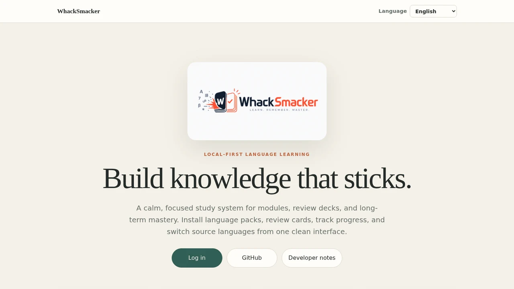
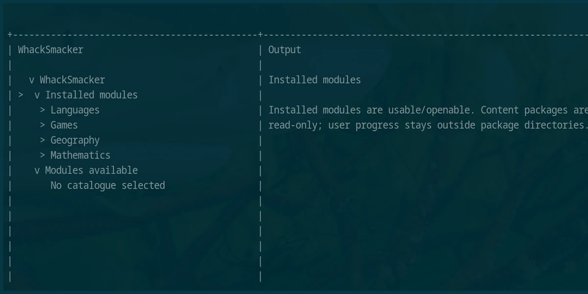

Module 01
Chess
Chess learning tools and structured practice within the wider WhackSmacker platform.
In developmentModular learning, from the terminal onward
A modular learning application that brings chess, languages, geography, and math into one evolving platform. Start with the functional CLI or follow the web alpha as it is built in public.
The project is under active development. Modules and interfaces are not all complete or production-ready.
Product previews
Real captures of the public web alpha and the functional command-line application.

The current public alpha landing page and its entry point to the web application.

The working terminal interface showing its installed and available module navigation.
A platform, not a single subject
Each module has its own learning model while sharing the same modular application foundation.
Module 01
Chess learning tools and structured practice within the wider WhackSmacker platform.
In developmentModule 02
Curriculum reading, review material, and language-focused learning workflows.
In developmentModule 03
Geography learning built as a distinct module, with room for structured content and practice.
In developmentModule 04
Mathematics learning and exercises designed to grow independently inside the platform.
In developmentPlatform roadmap
WhackSmacker currently has a functional command-line application. The browser version is under construction, and native applications are planned across desktop and mobile.
Built in public
Short project notes from Ashwin directly. Browse the Developer Notes archive.
Now both the Dutch & Vietnamese curriculum have been revised. Now that I finally have understood how this all works these two curricula will serve as test ground. The next immediate goal is to get the reading content polished up to an acceptable level. Separate grammar and exercise input will follow in a later stage.
Today a shorter day, with mostly boring technical things and some licensing stuff. As a test I will produce a large body of Dutch learning content first, as that's my mother tongue, and then quickly implement other languages.
Mainly polishing. This is going pretty solid.
A lot got done, but the most important thing is that it's all online now. The rest is just fiddling in the margins. If you want to use this, use the CLI for now, that one is actually pretty usable. The web frontend is just pre-alpha.
Today the CLI got polished a bit more and some language chapters were added. For Korean we're at chapter 40, and it seems that we're getting into high beginner territory. Also implemented is Traditional Chinese as one of the UI languages, but a lot of polishing is needed still.
Today we finished the basic CLI design of WhackSmacker. Supernerds and absolute freaks can give it a shot at using. Or well, I do.
Hello everyone! Everything these days begins with a first post, so here it is. Yes, I am human, and yes, I’m writing this myself, but not for long. For the foreseeable future it will be my enormous guest, Mr./Mrs. Bot, who will provide the updates and all those things, starting now. Enjoy!
Hello everyone! It's me, your human host. So why the name you ask? Well you know, I just wasn't in the greatest mood the world has ever seen when I picked it, and then just stuck with it because why not.
Current experimental download
The functional CLI is also published as the experimental image
sleepiestmario/whacksmacker:0.1.0-alpha.3. It is an alpha convenience path,
not a stable release channel.
docker run --rm -it \
--user "$(id -u):$(id -g)" \
-e HOME=/data \
-v ~/.local/share/whacksmacker:/data \
sleepiestmario/whacksmacker:0.1.0-alpha.3 \
--data-dir /data \
--catalogue /feed/catalogue.jsonThe user and home options keep generated progress and data files owned by your normal user instead of root.
Start where the project is now